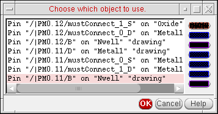

General Probing Behavior
You can select the object you want either by clicking in the schematic or layout window, or by choosing it from the list in the XL Probe form. For example,
-
If you click an instance in the layout, the layout instance and the corresponding schematic instance are both highlighted using the display color specified in the Highlight Options form, and a message like the one below is printed in the Information Panel in the XL Probe form.
inst:(lay)Q12->(sch)Q12
-
If Layout XL cannot find the corresponding schematic object, you see a question mark (?) at the end of the message in the XL Probe form.
inst:(lay)Q12->(sch)?
- If you click a location where there is more than one object, Layout XL highlights the selected objects in the following order: pins; nets; instances.
-
If you click a location where there is more than one of the same kind of object, a message window opens asking which one you want to probe.
 - The probes remain highlighted even after probing is canceled.
Probing Terminals and Nets in Must-Connect Relationships
The following behavior applies when you probe terminals and nets in must-connect relationships.
- If you probe a terminal in the schematic, all the corresponding terminals (including must-connect terminals) in the layout are cross-probed using the same display color.
- If you probe a net in the schematic, all corresponding nets (including those connected by must-connect terminals) are cross-probed in the layout using the same display color.
- If you probe a terminal in the layout, the corresponding terminal in the schematic is cross-probed using the same display color and the other must-connect terminals in the layout are cross-probed in a different color.
- If you probe a net in the layout, the corresponding net in the schematic is cross-probed using the same display color and the other must-connect nets in the layout are cross-probed in a different color.
Probing Components in OTM, MTM, and MTO Relationships
When you probe a component bound by a one-to-many, many-to-many, or many-to-one correspondence, Layout XL highlights all the components in the bound group.
If you probe an external net of a bound group, the corresponding external net in the other window is highlighted. If you probe an internal net of a bound group, the entire bound group is highlighted.
Probing with Multiple Layout Cellviews
If you have multiple layout cellviews open and you select a design element in one part of a cellview pair (a connectivity source and a layout) Layout XL highlights the corresponding element in any other implementations of the other part. For example, if you have several versions of a layout open, selecting R14 in the schematic highlights R14 in each of the layouts of that schematic.
However, if you have a schematic and two different layouts open, the XL Probe command applies to only the layout from which you selected the command.
Related Topics
Object Probing Using the Right Mouse Button
Return to top